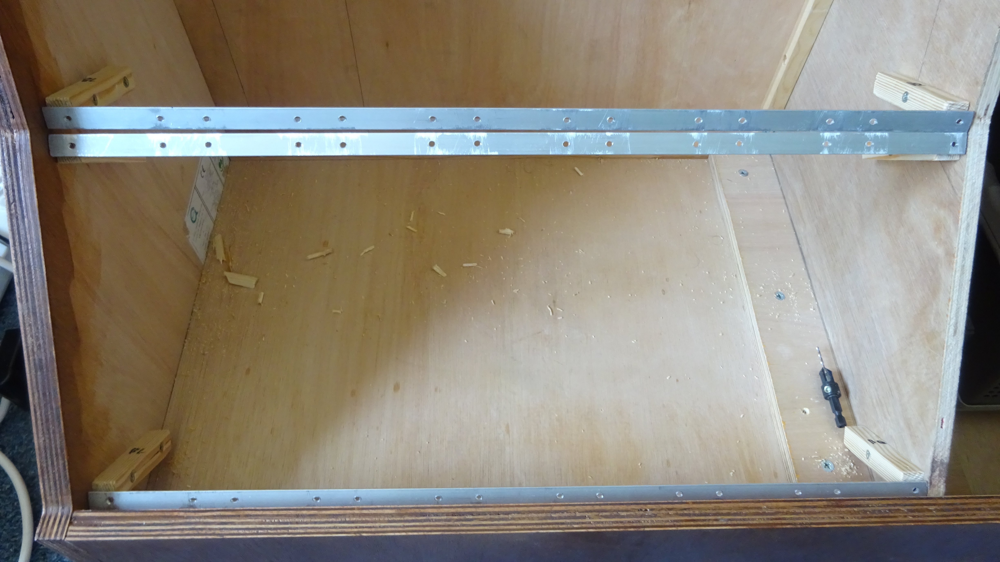

Construction on the box began in July 2023.
I had the pieces of the box cut out of a large 18mm plywood sheet, with the side ones cut using a router.
The box was then assembled with large rounded screws along the left and right sides to give an industrial look, and beading along the inside to support the other edges.
A thinner 12mm plywood sheet with a similar angled step shape was added to the middle inside the box.
This was to provide extra support along the middle so that the racks that were to hold the modules would have less flex to them.
Both of these steps were not carried out by me.
I then sanded the outside, and applied a wood stain and varnish to get the look and feel I wanted.
The plan for attaching the modules was to have metal L-shaped strips along the inside that the modules screwed onto.
These would then be attached to small wood pieces at the edges, which were then screwed into the box from the inside.
To insure that the spacing was correct for these racks, I attached the sample panels to the two pieces for a section as I installed it.
A slight oversight in the design ment that installing the rack mounts for the bottom row was extra difficult.
The lip from the frame along the front of teh box got in the way of accessing the screws for attaching and removing modules.
It also meant that when installing the bottom row of modules, I had to temporarily remove some of the screws attaching the rack to the box so that I could rotate them.
This then forced me to install the entire bottom row before adding any modules to the next row up.
